Questão 1 · Pseudoobstrução Colônica Síndrome de Ogilvie · 4000190725Paciente de 65 anos, internado em unidade de terapia intensiva para tratamento de pneumonia viral e síndrome respiratória aguda grave. Em ventilação mecânica invasiva e dieta por sonda nasoenteral. Apresentou distensão abdominal, quando foram realizadas algumas lavagens com solução glicerinada sem retorno satisfatório. Não apresenta diarreia. Exames séricos normais. A tomografia de abdome não evidencia lesões obstrutivas. Trata-se, possivelmente, de:
A Síndrome de Olgivie.
B Colite pseudomembranosa.
C Colite isquêmica.
D Isquemia mesentérica.
Questão 2 · Volvo Gástrico · 4000190385Paciente de 89 anos feminina com história de dor tóraco-abdominal, vômitos inicialmente alimentares que progrediram para salivares com laivos de sangue e, no momento da admissão no pronto atendimento, pela incapacidade de vômito, distensão abdominal importante. O médico socorrista tentou passar uma sonda nasogástrica no intuito de aliviar a distensão, sem sucesso. O diagnóstico mais provável e seu tratamento adequado são:
A úlcera gástrica; IBP
B síndrome do piloro hipertrófico; piloroplastia.
C síndrome de Dieulafoy; EDA.
D volvo gástrico; laparotomia exploradora.
E síndrome de Boerhaave; esofagectomia.
Questão 3 · Volvo de Sigmoide · 4000190358Mulher de 65 anos de idade procura a emergência por dor abdominal em cólica, localizada principalmente em hipogástrio, há 5 dias com parada de eliminação de fezes e atos no mesmo período. Nega febre. Ao exame clínico, encontra-se em bom estado geral, afebril, consciente e orientada. Sinais vitais estáveis. Abdome globoso, ácido, doloroso à palpação do hipogástrio, sem sinais de irritação peritoneal. Toque retal sem lesões tocáveis, sem sangue. Os exames complementares estão normais. Realizou a tomografia computadorizada de abdome total disponibilizada a seguir. O diagnóstico apresentado pela paciente é:
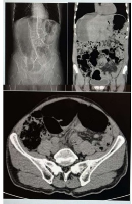
A Diverticulite aguda pseudotumoral
B Apendicite aguda hiperplásica
C Neoplasia de cólon transverso
D Volvo de sigmoide
Questão 4 · Diagnóstico · Exames de Imagem · 4000190348Mulher, 68 anos de idade, procura a emergência por dor abdominal em cólica associada a náuseas, vômitos e parada de eliminação de fezes e atos há 3 dias. Nega febre. Refere perda ponderal de 5kg (60kg para 55kg) nos últimos 3 meses. Nega cirurgias prévias. Ao exame clínico, encontra-se em bom estado geral, desidratada 1+/4+ com pressão arterial 110x70mmHg e frequência cardíaca 90bpm. Abdome distendido, ruídos hidroaéreos aumentados, ácido, doloroso à palpação profunda difusamente, sem sinais de irritação peritoneal. Toque retal sem sangue, sem lesões tocáveis, sem fezes. Realizou a tomografia computadorizada de abdome total disponibilizada a seguir: Considerando o quadro clínico e o exame de imagem, qual é o diagnóstico da paciente?
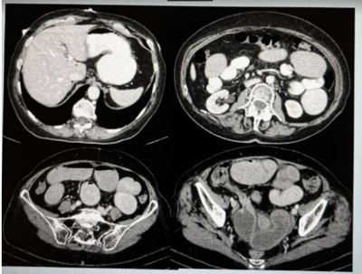
A Obstrução tumoral da válvula ileocecal
B Neoplasia obstrutiva de cólon sigmoide
C íleo biliar
D Volvo de ceco
Questão 5 · Introdução · Manif estações Clínicas e Exame Físico · 4000189729Leia atentamente o texto abaixo, que contém a descrição de um quadro clínico. Com base nas informações contidas no texto, responda a questão. Paciente feminina, 54 anos, internada na Emergência com quadro de dor abdominal e vômitos. O quadro tem cerca 48 horas de evolução. Ao colher a história, o colega de plantão identi cou que os vômitos iniciaram após as 24h do quadro de dor, e tem aspecto escurecido de odor pouco característico. Ao exame (Cesa A paciente apresenta-se desidratada ++ / 4, hemodinamicamente estável e afebril no momento. Não apresenta patologias de base, não usa nenhum medicamento, tem apenas histórico de duas Cesáreas anteriores. Sobre o provável diagnóstico de Abdome Agudo Obstrutivo dessa paciente, assinale a alternativa correta:
A os vômitos mais tardios indicam um provável quadro de obstrução de delgado alta ou proximal.
B os vômitos mais tardios indicam um provável quadro de obstrução de cólon com válvula ileocecal competente
C os vômitos mais tardios indicam um provável quadro de obstrução de delgado baixa ou distal.
D os vômitos mais tardios indicam um quadro de provável obstrução de cólon com válvula ileocecal incompetente.
E os vômitos mais tardios não têm nenhuma relação com o provável sítio da obstrução.
Questão 6 · Introdução · Aderências Intestinais Bridas · 4000189727Leia atentamente o texto abaixo, que contém a descrição de um quadro clínico. Com base nas informações contidas no texto, responda a questão. Paciente feminina, 54 anos, internada na Emergência com quadro de dor abdominal e vômitos. O quadro tem cerca 48 horas de evolução. Ao colher a história, o colega de plantão identi cou que os vômitos iniciaram após as 24h do quadro de dor, e tem aspecto escurecido de odor pouco característico. Ao exame (Cesa A paciente apresenta-se desidratada ++ / 4, hemodinamicamente estável e afebril no momento. Não apresenta patologias de base, não usa nenhum medicamento, tem apenas histórico de duas Cesáreas anteriores. Considerando a história, o quadro clínico e a hipótese de Abdome Agudo Obstrutivo dessa paciente, assinale a alternativa correta:
A o mais provável fator etiológico é neoplasia colônica.
B o mais provável fator etiológico são bridas e aderências pós-operatórias.
C o mais provável fator etiológico é hérnia incisional.
D o mais provável fator etiológico é metabólica.
E o mais provável fator etiológico é ileoadinâmico.
Questão 7 · Exames de Imagem · 4000189492Uma paciente de 72 anos de idade chega ao pronto-socorro com história de distensão abdominal há dois dias, parada de eliminação de atus e de fezes há um dia. Nega náuseas ou vômitos. Com base nesses dados clínicos e na radiogra a apresentada, o diagnóstico mais provável é
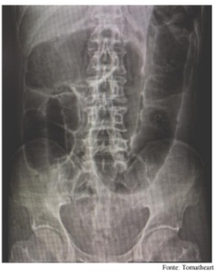
A síndrome de Ogilvie.
B volvo de sigmoide.
C volvo de ceco.
D obstrução intestinal baixa.
E diverticulite aguda.
Questão 8 · Volvo de Sigmoide · 4000189059Paciente idoso da entrada no pronto atendimento com dor abdominal e vômitos fecalóides de início súbito, seus sinais vitais estão dentro da normalidade para a sua idade. Na rotina radiológica nota-se o sinal do grão de café. O provável diagnóstico desse paciente, é:
A pancreatite aguda.
B apendicite aguda.
C úlcera péptica perfurada.
D volvo de sigmoide.
E diverticulite aguda.
Questão 9 · Exames Complementares · 4000187871Qual distúrbio hidroeletrolítico e ácido básico está mais frequentemente associado ao abdome agudo obstrutivo do intestino delgado proximal? (DENNIS L. KASPER, STEPHEN L. HAUSER, J. LARRY JAMESON . Medicina Interna de Harrison, parte 2, Seção 7 -19.Ed– 2016.)
A Alcalose, hipocalemia e hipocloremia.
B Alcalose, hipocalemia e hipercloremia.
C Acidose, hipocaliemia e hipocloremia
D Acidose, hipocaliemia e hipercloremia
E Acidose, hipercalemia e hipercloremia.
Questão 10 · Aderências Intestinais Bridas · 4000187482Mulher, 45 anos de idade, procura pronto-atendimento por dor abdominal há dois dias associada a náuseas, vômitos e parada de eliminação de fezes e atos. Nega febre. Nega comorbidades. Relata antecedente cirúrgico de histerectomia subtotal por miomas uterinos há 5 anos. Ao exame físico, encontra-se em regular estado geral, corada, desidratada 1+/4+. Abdome distendido, ruídos hidroaéreos aumentados, timpânico à percussão, doloroso à palpação difusamente, sem sinais de irritação peritoneal. Ausência de hérnias inguinofemorais. Toque retal sem lesões, com pequena quantidade de fezes pastosas em ampola retal. Realizou exame radiográfico, mostrado a seguir: Considerando o quadro clínico da paciente, qual é a causa de base da condição apresentada?
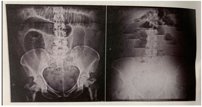
A Pancreatite aguda
B Aderências pós-operatórias
C Úlcera gástrica perfurada
D Intussuscepção intestinal
Questão 11 · Manif estações Clínicas e Exame Físico · 4000187349Paciente feminina de 62 anos queixando-se de dor abdominal difusa há 4 dias, em cólicas, associada a distensão abdominal e vômitos fétidos e escuros. Relata que há 4 meses vem apresentando alguns episódios esporádicos de sangramento nas fezes, bem como redução da frequência evacuatória. Nega febre. Nega trauma. Nega cirurgias prévias. Ao exame físico: regular estado geral, descorada, desidratada, anictérica, afebril. Semiologia cardíaca e pulmonar normais. Abdome distendido, com ruídos, doloroso a palpação difusa, sem sinais de irritação peritoneal. Toque retal nota-se lesão ulcerada circunferencial distando 5 centímetros da borda anal. Foras realizadas as radiogra as e a tomogra a de abdome e pelve abaixo. Assinale a alternativa que corresponde ao diagnóstico sindrômico.
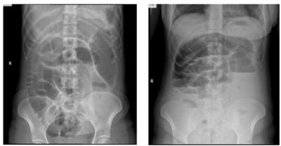

A Abdome agudo inflamatório.
B Abdome agudo vascular.
C Abdome agudo obstrutivo.
D Abdome agudo perfurativo.
Questão 12 · Neoplasia Colorretal · 4000187348Paciente feminina de 62 anos queixando-se de dor abdominal difusa há 4 dias, em cólicas, associada a distensão abdominal e vômitos fétidos e escuros. Relata que há 4 meses vem apresentando alguns episódios esporádicos de sangramento nas fezes, bem como redução da frequência evacuatória. Nega febre. Nega trauma. Nega cirurgias prévias. Ao exame físico: regular estado geral, descorada, desidratada, anictérica, afebril. Semiologia cardíaca e pulmonar normais. Abdome distendido, com ruídos, doloroso a palpação difusa, sem sinais de irritação peritoneal. Toque retal nota-se lesão ulcerada circunferencial distando 5 centímetros da borda anal. Foras realizadas as radiogra as e a tomogra a de abdome e pelve abaixo. A conduta mais adequada para este caso é:

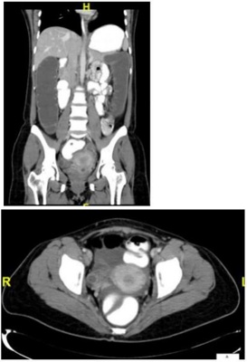
A Colostomia descompressiva.
B Proctocolectomia total.
C Radioterapia exclusiva.
D Amputação abdominoperineal.
Questão 13 · Introdução · Manif estações Clínicas e Exame Físico · Classif icações · 4000186860Nos pacientes com obstrução colônica do tipo “alça fechada” o local com maior risco para perfuração é:
A Válvula ileocecal.
B Cólon ascendente.
C Ceco.
D Cólon transverso.
Questão 14 · Tratamento Conservador x Tratamento Cirúrgico · Neoplasia Colorretal · 4000186436Paciente de 57 anos admitido em Pronto Socorro com quadro de dor abdominal de forte intensidade. Realizada rotina de abdome agudo com evidência de pneumoperitônio. Ao toque retal, diagnosticada lesão de reto a 5 cm de margem anal, estenosante. Submetido a laparotomia de urgência, com identi cação de válvula ileocecal competente e perfuração de ceco. Diante dos achados pré e intra-operatórios, qual a melhor conduta a ser tomada durante a cirurgia de urgência?
A Colectomia total com ressecção de lesão primária e ileostomia terminal.
B Colectomia direita com ileostomia à Mikulicz.
C Colectomia total com ressecção da lesão primária e íleo reto anastomose.
D Rafia de ceco com ileostomia em alça à montante da lesão.
E Rafia de ceco com amputação abdominoperineal do reto.
Questão 15 · Neoplasia Colorretal · 4000186226Paciente de 64 anos dá entrada na sala de emergência com quadro de distensão abdominal importante com parada de eliminação de fezes e atos há 4 dias. Refere que foi diagnosticado recentemente com câncer de reto baixo e vai iniciar quimioterapia e radioterapia neoadjuvantes. Supondo que o paciente tenha a válvula ileocecal competente, qual é o segmento do intestino grosso com maior risco de perfuração?
A Cólon transverso.
B Cólon sigmoide.
C Ceco.
D Cólon ascendente.
Questão 16 · Abdome Agudo Obstrutivo · 4000185277A respeito do abdome agudo obstrutivo (AAO), assinale a alternativa
A AAO classifica-se como alto ou baixo, de acordo com o distúrbio metabólico decorrente do quadro de obstrução.
B Obstrução intestinal em alça fechada é considerada uma emergência cirúrgica.
C Volvo de sigmoide e bridas são causas extrínsecas de obstrução intestinal.
D Neoplasias gástricas ou estenoses antropilóricas não são causas de AAO, pois não provocam parada de eliminação de gases e fezes.
E Algumas vezes, a primeira manifestação de uma neoplasia de cólon é o quadro obstrutivo.
Questão 17 · Tratamento Conservador x Tratamento Cirúrgico · Tratamento das Hérnias Inguinais · 4000183908Hérnias Complicadas Médico de plantão numa Unidade de Pronto Atendimento (UPA) atende a um paciente de 76 anos com dor abdominal há três dias, anorexia, náuseas, vômitos e parada na eliminação de gases e fezes, piorando nas últimas 24 h, e seguida de vômitos fecalóides. O paciente é hipertenso e faz uso de losartana. Ao exame clínico, está desidratado e descorado, apresentando TA (160 X 100 mmHg), FC = 110, SAT = 96% em ar ambiente. O abdômen está distendido, sem cicatrizes cirúrgicas, ruídos hidroaéreos débeis à palpação, bastante doloroso difusamente, com descompressão brusca positiva em fossas ilíacas. Há a presença de hérnia inguinal direita não redutível. O toque retal revela a ausência de fezes, as paredes retais com aspecto normal, a próstata aumentada e de consistência endurecida. Realizou exame radiológico simples no local que revelou alças intestinais com distensão e níveis hidroaéreos, ausência de fezes em ampola retal; hemograma = 15.000 leucócitos e desvio à esquerda e PCR= 160 mg/dl. Baseando-se no relato, avalie as afirmativas abaixo. Entre as afirmativas, estão corretas
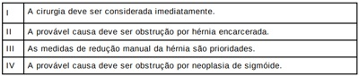
A I e IV.
B I e II.
C III e IV.
D II e III.
Questão 18 · Cirurgia · Aderências Intestinais Bridas · 4000183260Uma mulher de 65 anos de idade compareceu ao pronto-socorro devido à dor abdominal iniciada havia dois dias, associada a náuseas, vômitos e parada na eliminação de gases e fezes. No exame físico, constatou-se que a paciente se apresentava consciente, eupneica, desidratada +/4+, corada, com frequência cardíaca de 100 bpm, pressão arterial de 120 mmHg x 70 mmHg e com um abdome distendido, doloroso e sem sinais de peritonite. Havia uma incisão mediana infraumbilical, que, segundo a paciente, resultava de uma histerectomia por miomatose uterina feita havia dez anos. Foi realizada uma tomogra a de abdome sem contraste, que apontou distensão abdominal às custas de obstrução de intestino delgado (não havendo distensão colônica), sem causa definida pelo exame. O exame não indicou presença de líquido livre, pneumatose intestinal ou pneumoperitônio. Assinale a alternativa que apresenta a melhor conduta a ser adotada nesse caso hipotético.
A passagem de sonda nasogástrica, hidratação e observação
B tomografia de abdome com contraste endovenoso
C ultrassonografia de abdome
D colonoscopia
E laparotomia exploradora
Questão 19 · Neoplasias · Cirurgia · 4000183118Homem, 64 anos de idade, chega ao pronto-socorro com quadro de perda ponderal de 10 kg há 3 meses, empachamento pós-prandial e vômitos há 2 semanas. Refere que os episódios de vômitos apresentam o alimento ingerido e acontecem 2 horas após as refeições. Não há presença de bile. Refere melhora após os vômitos. Tem antecedentes de tabagismo, etilismo e laparotomia exploradora prévia há 12 anos por ferimento de arma de fogo. Ao exame físico o paciente apresenta- se emagrecido, sem dor a palpação, com abdome levemente distendido em andar superior esquerdo. Qual é a hipótese diagnóstica sindrômica mais compatível com o quadro clínico descrito e sua a principal causa etiológica?
A Síndrome de mau esvaziamento gástrico e neoplasia do cárdia.
B Abdome agudo obstrutivo por neoplasia colorretal.
C Abdome agudo obstrutivo por aderências.
D Síndrome de mau esvaziamento gástrico e neoplasia de região antro pilórica.
Questão 20 · Manif estações Clínicas e Exame Físico · Cirurgia · 4000182821Paciente de 64 anos veio à Emergência por dor abdominal em cólica e vômitos, com início há 12 horas. Referiu uma evacuação normal seguida de uma diarreica logo após o início do quadro, não ocorrendo mais eliminação de gases ou fezes desde então. Informou ter sido submetido a laparotomia por ferimento penetrante abdominal com lesão no fígado e no intestino delgado há mais de 20 anos. Negou comorbidades, exceto colelitíase assintomática. Ao exame, apresentava discreta distensão abdominal, concentrada no epigástrio que se encontrava timpânico. Ao toque, a ampola retal estava vazia. A radiogra a simples de abdômen mostrou distensão hidroaérea do intestino com formação de imagem de “pilha de moedas” e formação de níveis hidroaéreos em diferentes alturas. Assinale a assertiva correta sobre esse quadro clínico.
A Presença de níveis hidroaéreos sugere obstrução intestinal baixa.
B Vômitos no início do quadro e ausência de grande distensão sugerem obstrução intestinal alta.
C O paciente deve ter válvula ileocecal competente, o que explicaria o quadro clínico e os achados radiológicos.
D A causa mais provável do quadro é íleo biliar, por ter sido negligenciado o tratamento da colelitíase.
Questão 21 · Cirurgia · Exames de Imagem · 4000182713Sobre a avaliação por imagem na obstrução do intestino delgado, é
A A radiografia de abdômen agudo pode confirmar o diagnóstico, sendo os achados mais sutis ou ausentes se a avaliação for muito precoce.
B A ultrassonografia e a ressonância magnética são métodos menos precisos para o diagnóstico, mas podem ser utilizados para avaliar pacientes gestantes, devido ao risco da radiação ionizante.
C A tomografia computadorizada é o método de maior acurácia no diagnóstico e na avaliação da causa da obstrução.
D A presença de líquido livre intraperitoneal na tomografia computadorizada é um critério adequado para diferenciar entre a obstrução com e a sem isquemia associada.
Questão 22 · Cirurgia · Obstrução Intestinal Mecânica · 4000182408Paciente, sexo feminino, 65 anos de idade, procura o Pronto Socorro por empachamento e distensão abdominal há cinco dias. A paciente apresentou náuseas e alguns episódios de vômitos nas últimas 24 horas. Relata, também, hiporexia, perda de peso e obstipação progressiva, há três meses, não sendo investigada previamente. A paciente realizou artroplastia total de quadril esquerdo há 5 anos. Ao exame físico, regular estado geral, corada, desidratada, T axilar: 36ºC, FC: 88bpm, PA: 128x78mmHg, FR: 24imp; ausculta cardíaca e respiratória sem alterações; abdome distendido, tenso, com dor à palpação difusa e com descompressão brusca negativa; toque retal sem alterações. Foi realizada radiografía de abdome Indique a conduta cirúrgica mais adequada, caso a paciente não apresente melhora com o tratamento clínico instituído no Pronto Socorro.

A Lavagem intestinal no centro cirúrgico.
B Peritoneostomia descompressiva.
C Videolaparoscopia para reversão do volvo.
D Retossigmoidectomia com colostomia.
Questão 23 · Cirurgia · Obstrução Intestinal Mecânica · 4000182407Paciente, sexo feminino, 65 anos de idade, procura o Pronto Socorro por empachamento e distensão abdominal há cinco dias. A paciente apresentou náuseas e alguns episódios de vômitos nas últimas 24 horas. Relata, também, hiporexia, perda de peso e obstipação progressiva, há três meses, não sendo investigada previamente. A paciente realizou artroplastia total de quadril esquerdo há 5 anos. Ao exame físico, regular estado geral, corada, desidratada, T axilar: 36ºC, FC: 88bpm, PA: 128x78mmHg, FR: 24imp; ausculta cardíaca e respiratória sem alterações; abdome distendido, tenso, com dor à palpação difusa e com descompressão brusca negativa; toque retal sem alterações. Foi realizada radiografía de abdome Indique o exame complementar que deveria ter sido realizado há três meses, no momento em que se iniciaram os primeiros sintomas.

A Tomografia computadorizada com contraste.
B Colonoscopia.
C Radiografia de abdome.
D Ultrassonografia de abdome.
Questão 24 · Cirurgia · Obstrução Intestinal Mecânica · 4000182406Paciente, sexo feminino, 65 anos de idade, procura o Pronto Socorro por empachamento e distensão abdominal há cinco dias. A paciente apresentou náuseas e alguns episódios de vômitos nas últimas 24 horas. Relata, também, hiporexia, perda de peso e obstipação progressiva, há três meses, não sendo investigada previamente. A paciente realizou artroplastia total de quadril esquerdo há 5 anos. Ao exame físico, regular estado geral, corada, desidratada, T axilar: 36ºC, FC: 88bpm, PA: 128x78mmHg, FR: 24imp; ausculta cardíaca e respiratória sem alterações; abdome distendido, tenso, com dor à palpação difusa e com descompressão brusca negativa; toque retal sem alterações. Foi realizada radiografía de abdome. Diante desse caso clínico e da análise do exame de imagem, indique a principal suspeita etiológica que levou a paciente a procurar o Pronto Socorro.

A Aderência intestinal.
B Volvo de sigmoide.
C Neoplasia maligna de cólon.
D Fecaloma.
Questão 25 · Pseudoobstrução Colônica Síndrome de Ogilvie · Cirurgia · 4000182190Homem de 90 anos, com internação prolongada e imobilização por tratamento cirúrgico de fratura do colo do fêmur. Estava em antibioticoterapia para tratamento de pneumonia nosocomial e passou a apresentar parada de eliminação de atos e fezes associada à distensão abdominal dolorosa. Ao exame, o estado geral era bom, entretanto o abdome era distendido, doloroso à palpação super cial, hipertimpânico e sem sinais de irritação peritoneal. A radiogra a simples de abdome mostrou importante distensão gasosa de todo o cólon. Qual o provável diagnóstico e a melhor conduta indicada neste caso?
A Íleo metabólico; compensação dos distúrbios hidroeletrolíticos e dieta laxativa.
B Megacólon funcional; colectomia total com ileostomia temporária e sepultamento do reto.
C Pseudo obstrução colônica aguda; descompressão endoscópica do cólon.
D Volvo colônico; colonoscopia descompressiva e compensação dos distúrbios e hidroeletrolíticos.
Questão 26 · Cirurgia Inf antil · Cirurgia · Íleo Paralítico · 4000182094Criança de 5 anos, queixa-se de vômitos 3 vezes ao dia há 3 dias, acompanhados de diarreia aquosa de médio volume, 5 vezes ao dia. Hoje a mãe notou que a criança está apática, com dor abdominal e diminuição das evacuações. Não está se alimentando adequadamente. Exame físico: regular estado geral, descorado +/4+, febril, hidratado. Aparelho respiratório: sem alterações. Aparelho cardiovascular: 2 bulhas rítmicas normofonéticas sem sopros, FC: 130 bpm, PA: 90 x 50 mmHg, pulsos cheios, tempo de enchimento capilar> 2 segundos. Abdome: distensão abdominal, com dor à palpação difusa e ruídos hidroaéreos diminuídos. Exames laboratoriais: Na: 135 mEq/L, K: 2,9 mEq/L, Ca iônico: 1/2 mg/dl. Escala de alvarado modificada: 3. Qual a hipótese diagnóstica?
A Constipação intestinal.
B Íleo paralítico
C Apendicite aguda.
D Adenite mesentérica.
Questão 27 · Cirurgia · Obstrução Intestinal Mecânica · 4000181709Um homem de 35 anos de idade, com antecedente de hérnia incisional há 2 anos, decorrente de laparotomia mediana por ferimento de arma branca, vai ao pronto-socorro com queixa de um dia de dor abdominal, náuseas, vômitos e abaulamento irredutível no local da incisão abdominal. O abdome está distendido e é difusamente doloroso. Os ruídos hidroaéreos estão aumentados e têm timbre alterado. Não tem sinais de peritonite. A área da hérnia está hiperemiada. Entre as opções abaixo, a melhor conduta para este paciente, além de jejum, hidratação venosa e sonda gástrica aberta deve ser:
A Tratamento inicial com antibioticoterapia e observação.
B Cirurgia de urgência, corrigindo a hérnia com tela absorvível.
C Cirurgia de urgência, corrigindo a hérnia com tela de polipropileno.
D Redução manual da hérnia e observação.
Questão 28 · Cirurgia · Íleo Biliar · 4000181704Senhora de 78 anos de idade vai ao pronto-socorro com dor abdominal há 3 dias. Antecedentes: diabetes e revascularização do miocárdio. Tem história de crises de dor epigástrica em cólica e de febre. Está desidratada e taquicárdica. A pressão arterial é normal. O abdome está distendido, com ruídos hidroaéreos aumentados. Não tem nenhuma cicatriz de cirurgia abdominal. No toque retal, tem fezes na ampola. Fez a radiografia de abdome ilustrada a seguir Entre as opções diagnósticas seguintes, a mais provável para este paciente é
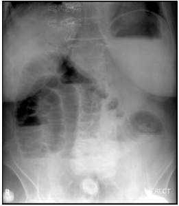
A apendicite aguda.
B litíase intravesical.
C inconclusiva, requer tomografia de abdome total.
D íleo biliar
Questão 29 · Íleo Biliar · Íleo Biliar · 4000181183Sobre o íleo biliar, atribua V (verdadeiro) ou F (falso) às afirmativas a seguir. ( ) Ocorre devido a uma fístula colecistoentérica, geralmente para o duodeno. ( ) Seu quadro clínico ocorre devido à obstrução mecânica do intestino delgado. ( ) Pneumobilia é frequentemente observado em uma tomografia de abdome. ( ) Geralmente, a obstrução ocorre no jejuno próximo ao ângulo de Treitz. ( ) Na maioria das vezes, o tratamento é expectante, realizando-se a colecistectomia e a correção da fístula após regressão do quadro obstrutivo. Assinale a alternativa que contém, de cima para baixo, a sequência correta.
A V, V, V, F, F.
B V, F, F, V, F.
C V, F, V, F, V.
D F, V, F, V, V.
E F, F, V, V, F.
Questão 30 · Intussuscepção ou Invaginação Intestinal · 4000181178A invaginação ou intussuscepção intestinal é a penetração de uma porção do intestino proximal no distal, em decorrência de sua peristalse. Sobre a invaginação ou intussuspceção intestinal, assinale a alternativa correta.
A A tríade clássica de Ombredane consiste de vômitos biliosos, fossa ilíaca direita vazia e fezes em “geleia de morango”.
B A apresentação de sangramento anal está associada à isquemia do intestino e, portanto, ocorrerá alguns dias após a instalação do quadro.
C As alternativas de tratamento radiológicas têm melhores resultados do que as operatórias, com menores taxas de recorrência.
D Os casos idiopáticos, ou seja, sem uma doença estrutural de base, são menos comuns e acometem crianças mais velhas.
E Pode ter velocidade de progressão muito rápida, chegando a se exteriorizar pelo ânus, simulando um prolapso retal.
Questão 31 · Volvo de Ceco · Ceco e Apêndice Vermif orme · 4000192693Embora tenha elasticidade, uma dilatação aguda do ceco que pode ser medida por uma radiogra a abdominal simples pode resultar em necrose isquêmica e perfuração da parede intestinal. Neste contexto, o valor de corte, em centímetros, para este tipo de lesão é:
A 6 cm
B 8 cm
C 10 cm
D 12 cm
Questão 32 · Aderências Intestinais Bridas · 4000191073Com relação à obstrução intestinal por bridas e aderências, assinale a alternativa correta.
A A necessidade de ressecções intestinais é de 80% nos pacientes operados nas primeiras 24 horas da admissão.
B Na cirurgia videolaparoscópica, o pneumoperitônio e o uso de trocateres evitam a formação de bridas e aderências no pós-operatório.
C O sofrimento isquêmico intestinal é geralmente abordado com medidas clínicas, como hidratação e uso de vasodilatadores.
D Em 90% dos casos, medidas clínicas garantem a resolução espontânea da situação.
E Os exames laboratoriais são determinantes para o diagnóstico de sofrimento isquêmico intestinal.
Questão 33 · Cirurgia · Aderências Intestinais Bridas · Obstrução Intestinal Mecânica · 4000178598Homem de 55 anos refere vômitos biliosos, dor abdominal tipo cólica e parada de eliminação de gases e fezes há cerca de 3 horas. Fez cirurgia por úlcera péptica perfurada há 5 anos. Seu exame físico evidencia: cicatriz de incisão mediana xifopubiana, abdome pouco distendido e doloroso à palpação profunda, sem sinais de irritação peritoneal. Não foi possível palpar massas e/ou visceromegalias. A imagem a seguir corresponde à radiografia de abdome desse paciente. Nesse caso, além de reposição hidroeletrolítica, qual é a conduta mais adequada?

A Videolaparoscopia diagnóstica.
B Laparotomia exploradora de emergência.
C Sondagem nasogástrica e observação clínica.
D Descompressão colônica por retossigmoidoscopia.
Questão 34 · Obstrução Intestinal Alta · Cirurgia · 4000170571Uma mulher de 45 anos de idade, sem comorbidades, chegou ao pronto-socorro com dor e distensão abdominal há cerca de cinco dias. Ontem, passou a apresentar vômitos fecaloides. Ao exame físico, apresentava-se em regular estado geral, desidratada, descorada +/4+, eupneica, com frequência cardíaca de 90 bpm e pressão arterial de 110 x 70 mmHg. O exame d o abdome revelava distensão e dor difusa, mas sem sinais de peritonite. Não apresentava alterações na gasometria arterial nem leucocitose. Com base nesse caso hipotético, assinale a alternativa que apresenta a descrição correta dessa obstrução intestinal.
A mecânica, baixa e não complicada
B mecânica, alta e não complicada
C funcional, alta e complicada
D funcional, baixa e não complicada
E funcional, alta e não complicada
Questão 35 · Manif estações Clínicas e Exame Físico · Hérnias Complicadas · Apresentação Clínica · 4000170362Paciente de 32 anos vai à emergência do Hospital Universitário com dor em região inguinal esquerda, apresentando neste local abaulamento que se estende à bolsa escrotal ipsilateral. Ruídos hidroaéreos estão presentes na bolsa escrotal. Apresenta vômitos entéricos, distensão abdominal e ausência de eliminação de gases há 24 horas. Sobre esse paciente, é CORRETO:
A Apresenta hérnia inguinal que, mais provavelmente, origina-se lateralmente aos vasos epigástricos inferiores.
B Apresenta hérnia inguinal tipo IV de Nyhus e, portanto, deve ser corrigida pelo reparo de Marcy.
C Esta hérnia cruza o trígono de Calot.
D Hérnia inguinal é causa frequente de obstrução do intestino delgado, sendo a enterectomia fundamental no tratamento.
Questão 36 · Cirurgia · Aderências Intestinais Bridas · 4000169926Paciente masculino, 65 anos, chega ao pronto atendimento com quadro de dor e distensão abdominal há 3 dias, vômitos e parada de eliminação de gases e fezes. Têm histórico prévio de ferimento por arma branca em abdome, cirurgias abdominais posteriores para reconstrução de trânsito intestinal e hernioplastia incisional. Ao exame físico, apresenta-se hipotenso, febril e com leve taquipneia. Apresenta sinais de peritonite difusa à palpação abdominal. Toque retal com ampola retal vazia, sem demais alterações. Apresenta leucocitose importante, com desvio à esquerda e função renal alterada. Após terapêutica clínica iniciada na urgência, qual a provável hipótese diagnóstica e o tratamento adequado?
A Volvo de sigmoide – laparotomia exploradora.
B Obstrução de delgado (brida) – manter tratamento clínico.
C Neoplasia de retossigmoide – colonoscopia.
D Obstrução de delgado (brida) – laparotomia exploradora.
E Colecistite aguda – colecistectomia videolaparoscópica.
Questão 37 · Quadro Clínico · Critérios Diagnósticos · Fecaloma · 4000169596Mulher de 75 anos de idade está internada em uma enfermaria de clínica médica, com queixa de dor e distensão abdominal progressivas há 4 dias. Segundo a família, a paciente iniciou concomitantemente um quadro de confusão mental aguda, com períodos de prostração seguidos de agitação psicomotora. Negaram sintomas urinários, mas relataram constipação há 5 dias. Está em uso de meperidina para controle de dor, a qual foi iniciada após cirurgia de prótese de joelho há 3 meses. Tem diagnóstico prévio de hipertensão arterial sistêmica e neoplasia de mama, a qual foi tratada com sucesso há 12 anos, estando em acompanhamento regular com mastologista. O exame clínico evidenciou desatenção e utuação do nível de consciência, com escala de coma de Glasgow (ECG) de 14. O seu abdome era distendido, com ruídos hidroaéreos aumentados, timpânico e com dor discreta à palpação difusamente. O toque retal apresentava fezes endurecidas em ampola, sendo possível verificar presença de saída de atos. Foi solicitada radiogra a de abdome, que pode ser vista na figura a seguir: (Radiografia de abdome) Os exames laboratoriais realizados evidenciaram creatinina sérica de 0,9 mg/dL, ureia sérica de 23 mg/dL, sódio de 140 mEq/L, potássio de 5,1 mEq/L e magnésio de 2,2 mg/dL. Quais os diagnósticos apresentados pela paciente neste momento?
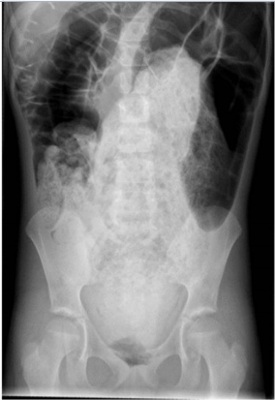
A Semioclusão intestinal e metástase em sistema nervoso central.
B Fecaloma e delirium hipoativo.
C Síndrome de Ogilvie e demência do tipo vascular.
D Isquemia mesentérica e encefalopatia metabólica.
E Abdome agudo perfurativo e encefalopatia associada a sepse.
Questão 38 · Pseudoobstrução Colônica Síndrome de Ogilvie · 4000168125Um paciente está internado na UTI com quadro de COVID-19 avançado. O paciente encontra-se em uso de drogas vasoativas e em ventilação mecânica. O plantão da cirurgia geral foi acionado para avaliar um quadro de distensão abdominal. Na tomografia foram observadas as seguintes imagens. Qual o possível diagnóstico e a conduta?
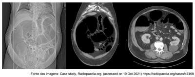
A Perfuração intestinal, tratamento cirúrgico.
B Pseudo-obstrução colônica, tratamento cirúrgico.
C Ileo Paralítico, tratamento conservador com infusão intravenosa de procinéticos.
D Síndrome de Bouveret, tratamento por meio de colonoscopia descompressiva.
E Síndrome de Ogilvie, tratamento conservador com infusão intravenosa de neostigmina.
Questão 39 · Aderências Intestinais Bridas · 4000167101Um paciente com dor e distensão abdominal associadas a vômitos deu entrada no prontoatendimento. A suspeita é de uma obstrução do intestino delgado. Qual das seguintes alternativas representa a causa mais comum, em geral, desse tipo de obstrução?
A Doença de Crohn.
B Neoplasia.
C Retocolite ulcerativa.
D Aderências.
E Hérnia interna.
Questão 40 · Neoplasia Colorretal · 4000166472Paciente do sexo feminino, 64 anos, dá entrada no serviço de urgência apresentando quadro de dor abdominal difusa, tipo cólica, progressiva, associada a vômitos e parada de eliminação de gases e fezes, com evolução de 3 dias. Apresentava-se em REG, bastante desidratado, taquicárdico, taquipneico e discretamente hipotenso. Seu abdome é distendido, difusamente doloroso à palpação difusamente, sem irritação peritoneal. Os exames laboratoriais evidenciaram anemia, leucocitose moderada, hiponatremia, hipopotassemia e acidose metabólica. A radiogra a de abdome evidencia distensão significativa de cólon, porém sem distensão importante do intestino delgado. A tomogra a de abdome confirmou os dados acima e evidenciou área de estenose tumoral a nível da transição retossigmoidea e sinais de dissecção gasosa da parede do cólon direito. Sobre o caso descrito acima, assinale a alternativa INCORRETA:
A Os dados acima nos permitem afirmar que o paciente apresenta válvula íleo-cecal competente.
B O tratamento com maiores chances de sucesso para o caso é a sondagem nasogástrica descompressiva, ressuscitação volêmica, correção dos distúrbios eletrolíticos, antibioticoterapia e observação clínica por 48 horas.
C O paciente deve ter tratamento adequado instituído urgentemente devido ao risco iminente de perfuração do ceco.
D A colostomia é parte do acervo técnico cirúrgico possível para o caso acima.
Questão 41 · Abdome Agudo Obstrutivo · Cirurgia · 4000165605Homem, 62 anos de idade, é admitido no serviço de emergência devido a dor abdominal em cólica, vômitos e distensão abdominal há 4 dias. Última evacuação há 5 dias e, desde então, não elimina gases. Refere cólica abdominal há 3 meses, com vômitos esporádicos que melhorava com jejum e medicamento antiespasmódico. Tem hipertensão arterial controlada e nega operações abdominais prévias. Ao exame físico: Bom estado, desidratado, eupneico. Abdome: distendido, ruídos hidroaéreos aumentados, doloroso à palpação profunda sem irritação peritoneal. Toque retal: sem fezes na ampola. Exames laboratoriais: Hb: 10,9 g/dL; Ht: 38%; Creatinina: 2,9 mg/dL; Ureia: 110 mg/dL. Demais exames sem alterações. Realizada a tomografia de abdome apresentada. Qual é a principal hipótese diagnóstica?
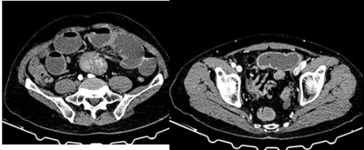
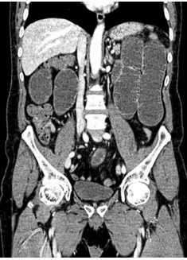
A Abdome agudo obstrutivo ao nível do sigmoide.
B Síndrome de Ogilvie.
C Abdome agudo obstrutivo ao nível de delgado.
D Íleo paralítico.
Questão 42 · Volvo de Sigmoide · Cirurgia · 4000164954Homem, 50 anos, é admitido com quadro de parada de eliminação de gases e fezes, além de dor abdominal. Exame físico: hipertimpanismo abdominal. Radiografia (Rx) anteroposterior e TC do abdome, a seguir. A melhor descrição das imagens e a hipótese diagnóstica mais provável, respectivamente, são radiogra a com distensão de alça cólica cujo ápice encontra-se no quadrante superior:
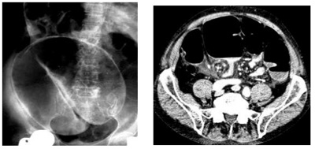
A direito do abdome e, na TC, há rotação mesentérica com afilamento do sigmoide / volvo de sigmoide
B esquerdo do abdome e, na TC, há rotação mesentérica com afilamento do ceco / volvo de ceco
C direito do abdome e, na TC, há pneumatose intestinal / isquemia mesentérica
D esquerdo do abdome e, na TC, há linfonodomegalia mesentérica / obstrução intestinal por tumor de cólon
Questão 43 · Hérnias Complicadas · Cirurgia · Hérnia Complicada · 4000164818Paciente feminina, 65 anos, dá entrada no serviço de emergência com dor abdominal tipo cólica, náuseas e vômitos há 2 dias. História de hipertensão arterial em tratamento medicamentoso. Nega cirurgias prévias. Ao exame: abdome com distensão abdominal, RHA aumentados, presença de abaulamento irredutível abaixo do ligamento inguinal à esquerda, sem sinais flogísticos locais. A principal hipótese diagnóstica e a melhor conduta neste momento seriam:
A Hérnia femoral encarcerada – inguinotomia com correção da hérnia. Se sofrimento intestinal realizar laparotomia exploradora.
B Tumor metastático para região inguinal – Tomografia de abdome e pelve com contraste.
C Hérnia femoral encarcerada – Redução manual da hérnia sob analgesia e posterior herniorrafia de maneira eletiva.
D Lipoma de cordão – ultrassom de região inguinal.
Questão 44 · Cirurgia · Fecaloma · 4000164396Uma senhora de 68 anos procura o pronto-socorro por dores abdominais em cólica, mais localizadas em baixo-ventre, e di culdade para evacuar, que foi piorando ao longo dos últimos 6 meses. Vinha evacuando a cada 4 dias, sendo que atualmente está há 1 semana sem evacuar. Queixa-se ainda de náuseas e vômitos. Não tem antecedentes relevantes, salvo hipertensão arterial, que trata com diurético. Refere tabagismo de 1 maço/dia, por “mais de 20 anos”. Nega febre. Refere emagrecimento de 10 kg (de 80 para 70 kg) nos últimos 6 meses. Está desidratada. Tem distensão abdominal, sem peritonismo. Fez a radiografia ilustrada a seguir. A conduta neste momento deve ser:
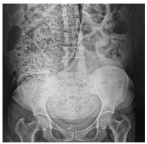
A Preparo anterógrado para colonoscopia.
B Lavagem retal, inicialmente.
C Laparotomia de urgência.
D Tomografia de abdômen e pelve, com contraste por via retal.
Questão 45 · Cirurgia · Aderências Intestinais Bridas · 4000164386Uma paciente de 33 anos queixa-se de dor abdominal difusa, que vem aumentando, e parada de eliminação de atos e fezes há 2 dias. Tem náuseas e teve 2 episódios de vômitos. Nega febre ou sintomas urinários. Nega episódios prévios semelhantes. Antecedentes: histerectomia total abdominal. Está em bom estado geral, corada, anictérica, acianótica, afebril, mas desidratada1+/4+. O abdômen está distendido e é doloroso difusamente à palpação. A descompressão brusca é negativa. Os ruídos hidroaéreos estão presentes, mas diminuídos. Toque retal: ausência de fezes em ampola; sem massas palpáveis. Hemoglobina: 14,2 mg/dL, proteína C reativa: 28 mg/L, Na+: 141 mEq/L, K+: 3,4 mEq/L. Foi submetida inicialmente a tratamento clínico, com jejum, sonda gástrica aberta e hidratação, iniciado há 12 horas. Fez a tomogra a de abdômen ilustrada a seguir. Conduta de maior risco para esta paciente:

A Manter o tratamento clínico por mais 12 horas.
B Laparotomia exploradora.
C Fazer trânsito intestinal com contraste baritado pela sonda gástrica.
D Laparoscopia.
Questão 46 · Tratamento · 4000153208Paciente de 60 anos de idade, masculino, procura hospital pronto-socorro com história de parada de eliminação de atos e fezes há cerca de 1 semana. Nega vômitos. Ao exame físico, paciente em regular estado geral, desidratado, dispneico, taquicárdico. Abdome globoso, hipertimpânico, doloroso à palpação difusa, com sinais de irritação peritoneal. Toque retal com ampola retal vazia, sem fezes, sem muco, sem sangue em “dedo-de-luva”. Solicitadas radiogra as de tórax e abdome, demonstrando distensão volumosa de cólon e ceco (maior que 12 cm), com níveis hidroaéreos, sem distensão de intestino delgado. Baseado nessas informações, qual a conduta?
A Sonda nasogástrica.
B Observação.
C Laparotomia exploradora.
D Clister glicerinado.
Questão 47 · Fecaloma · 4000174548Um paciente de 75 anos é internado por distensão abdominal, vômitos, crises de cólicas cada vez mais intensas e frequentes e parada de evacuação e de eliminação de gases há 6 dias. Nega emagrecimento recente. Proveniente de casa de repouso, o paciente é acamado e totalmente dependente. Está em regular estado geral, mas muito desidratado. Pulso: 110 bpm, PA: 110 x 70 mmHg. O abdome está distendido e tem sinal de Gersuny+. Etapa do exame físico que possibilita a confirmação do diagnóstico:
A Toque retal.
B Palpação do canal inguinal.
C Ausculta dos ruídos hidroaéreos.
D Pesquisa de círculos de Skoda.
E Descompressão brusca.
Questão 48 · Pseudoobstrução Colônica Síndrome de Ogilvie · 4000173910Em um paciente com pseudo-obstrução dos cólons, a neostigmina é frequentemente usada como terapêutica de primeira linha. Qual droga é usada para neutralizar o principal efeito colateral da neostigmina?
A Adenosina.
B Atropina.
C Betabloqueadores.
D Epinefrina.
Questão 49 · Íleo Paralítico · 4000173371Paciente do sexo masculino, 40 anos, foi submetido a colectomia esquerda seguida de colostomia tipo Hartmann, devido a tumor de cólon obstrutivo. Durante a cirurgia, observou-se edema e dilatação de todo o intestino delgado e do cólon. No 5º dia de pós-operatório, o paciente está em regular estado geral, eupneico, afebril, permanece com distensão abdominal e alto débito de líquido bilioso pela sonda nasogástrica, ruídos abdominais diminuídos e eliminação precária de gases pela colostomia. A radiogra a simples de abdome mostra distensão de intestino delgado e cólon. Das possibilidades abaixo, a mais provável seria:
A Obstrução intestinal por bridas.
B Íleo paralítico.
C Obstrução intestinal por hérnia interna.
D Obstrução da colostomia.
Questão 50 · Manif estações Clínicas e Exame Físico · Tratamento Conservador x Tratamento Cirúrgico · 4000172182Classif icações João 54 anos, procura o PS por dor abdominal em cólica, difusa, há 72 horas, associada a distensão abdominal e parada de eliminação de gases e fezes. Refere alteração do hábito intestinal há 3 meses, com necessidade de laxativos para evacuar, além de sangue nas fezes e alteração do formato. Nega vômitos. Não tem antecedentes mórbidos relevantes e nega operações prévias. Ao exame físico está em bom estado geral, corado, desidratado, IMC: 31kg/m2. Abdome: ácido, distendido, pouco doloroso à palpação, sem sinais de irritação peritoneal e sem massas palpáveis. No toque retal, ausência de fezes na ampola, presença de lesão ulcerada circunferencial a 6 cm da borda anal e presença de sangue. Realizada tomogra a de abdome e pelve: ausência de lesões hepáticas, sem líquido livre. Distensão apenas de cólon e espessamento do reto médio distal com linfonodos aumentados no mesorreto. Qual é a conduta?
A Ileostomia em alça por laparotomia.
B Retossigmoidectomia oncológica e colostomia terminal.
C Colostomia em alça por laparotomia.
D Amputação de reto com linfadenectomia.
E Biopsia
Questão 51 · Síndrome de Mirizzi · Tratamento · Exame Físico e História Clínica · 4000170204Um paciente de 68 anos de idade, diabético controlado, dá entrada no hospital com sepse de foco abdominal, taquicárdico, dispneico, com murphy + à palpação e abdome muito distendido com relatos de parada de eliminação de gazes e fezes. Realizou ultrassom de abdome que evidenciou colecistite aguda en sematosa complicada e bloqueada. Foi submetido a laparatomia exploradora em que se notou fístula entre a vesícula e duodeno e com cálculo biliar impactando a válvula íleo cecal, caracterizando um síndrome de Mirizzi com íleo biliar. Nessa situação, a melhor conduta e a classificação do Mirizzi seriam, respectivamnete:
A colectomia direita e drenagem percutânea da via biliar e Mirizzi tipo II.
B ileostomia em alça com colangiografia intraoperatória e Mirizzi tipo IV.
C enterotomia com retirada do cálculo com colecistectomia e Mirizzi tipo Vb.
D colostomia em Alça com colecistectomia e Mirizzi tipo III.
E enterectomia com colecistendese e Mirizzi tipo Va.
Questão 52 · Divertículo de Meckel · Diagnóstico · Manif estações Clínicas · 4000170187Paciente de 31 anos, sexo feminino, com duas cirurgias anteriores prévias, ooforectómica direita e apendicectomia, respectivamente. Relata, há 1 semana, dores em fossa ilíaca direita, com leve distensão, dores tipo cólica, náuseas e vômitos e piora do trânsito intestinal, cando mais constipada. Ao exame físico, não apresentava peritonite, mas era notável uma massa palpável na topografia de fossa ilíaca direita. Foi solicitado um RX de abdome total e uma tomografia de abdome total cujas imagens estão apresentadas a seguir. Frente às imagens e ao quadro clínico, a principal hipótese diagnóstica e melhor conduta seriam, respectivamente:
A doença de Crohn estenosante; uso de terapia biológica (Anti Tnf-alfa).
B neoplasia mucinosa de delgado e quimioterapia adjuvante.
C GIST do delgado; laparotomia exploradora.
D intussuscepção intestinal por provável divertículo de Meckel; ressecção local por cirurgia.
E corpo estranho devido a cirurgia prévia; laparotomia exploradora.
Questão 53 · Volvo de Sigmoide · Cirurgia · 4000151988Um paciente de 83 anos está internado há 1 mês por insu ciência respiratória grave por COVID-19. Traqueostomizado, atualmente está em programa de desmame, tanto das drogas vasoativas quanto da ventilação mecânica. Há 2 dias, começou a apresentar dor e distensão abdominal. A PCR passou de 40 mg/L para 90 mg/L (normal: até 3 mg/L) e os leucócitos subiram de 14.500/mm³ para 17.000/mm³. Não tem sinais de peritonismo. Fez a radiogra a ilustrada a seguir. A melhor conduta inicial, em condições ideais, além de manter em jejum com hidratação intravenosa, seria:
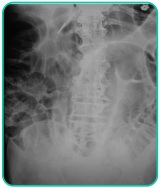
A Colonoscopia descompressiva.
B Intervenção cirúrgica.
C Neostigmina.
D Passagem de sonda nasogástrica e retal.
E Lavagem intestinal.
Questão 54 · Cirurgia · 4000147365Paciente masculino de 80 anos, tabagista, com antecedente de DM, HAS, IAM há 3 meses e DPOC, deu entrada no pronto-socorro com quadro de dor e distensão abdominal há 3 dias, associada à parada de eliminação de gases e fezes, e vômitos fecaloides. Ao exame físico, apresentava-se em REG, desidratado, descorado e afebril. PA: 100 x 70 mmHg, FC: 102 bpm; FR: 20 ipm. O abdome apresentava-se distendido, com ruídos hidroaéreos com timbre metálico, sem sinais de irritação peritoneal. Toque retal com ampola vazia. O hemograma era de 17.000 leucócitos, sem desvio à esquerda, e a rotina radiológica de abdome agudo mostrou distensão colônica, sem distensão do intestino delgado, ceco com diâmetro de 16 cm, stop gasoso no sigmoide e sinal de Rigler. Diante da provável hipótese diagnóstica, qual é a conduta para o caso apresentado?
A Transversostomia descompressiva com incisão transversa no hipocôndrio direito, sem laparotomia.
B Cirurgia de Hartmann.
C Sigmoidectomia com anastomose primária.
D Passagem de stent expansível transtumoral via colonoscopia.
E Colectomia total com ileostomia terminal e sepultamento do coto retal.
Questão 55 · Cirurgia · Síndrome da Artéria Mesentéria Superior · 4000146104As imagens abaixo foram realizadas na investigação de uma paciente feminina, 24 anos de idade, com queixas de dor e distensão abdominal pós-prandial e eructações frequentes há aproximadamente 2 meses. Relata perda ponderal importante neste mesmo período. As imagens evidenciam compressão da terceira porção duodenal entre a artéria mesentérica superior e a aorta, com consequente dilatação a montante. Tratase da:
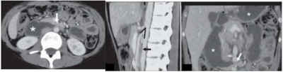
A Síndrome de Wilkie.
B Síndrome de Foley.
C Síndrome de Prader Willi.
D Síndrome de Cocket.
Questão 56 · Volvo de Sigmoide · Cirurgia · 4000145962Mulher de 86 anos de idade internada em terapia intensiva há 12 dias por edema agudo de pulmão, secundário a insu ciência cardíaca descompensada. Piorou nos últimos 5 dias, com necessidade de intubação orotraqueal e uso de droga vasoativa. Solicitada avaliação da cirurgia geral devido ausência de evacuação há 4 dias, mesmo após medidas laxativas. Ao exame: abdome distendido, hipertimpânico, tenso; toque retal com ampola vazia, sem massas palpáveis ou sangue em dedo de luva. Radiogra a de abdome realizada no leito identi cou grande distensão do cólon, com sinal do ""grão de café"" ou “U” invertido, achado este confirmado por tomogra a de abdome, que não identi cou líquido livre, pneumoperitônio ou pneumatose intestinal. Qual é a conduta para o caso no momento?
A Colonoscopia descompressiva.
B Laparotomia exploradora para retossigmoidectomia à Hartmann.
C Neostigmina por via endovenosa.
D Laparotomia exploradora para colectomia total com ileostomia terminal.
Questão 57 · Volvo de Sigmoide · Gastroenterologia · 4000145712Paciente, 75 anos, é atendido no serviço de emergência, com relato de ser portador de distúrbios psiquiátricos tratados com drogas psicotrópicas. Há ainda história de início súbito de dor abdominal intensa, vômitos e constipação. O exame do abdome mostra acentuada distensão e timpanismo aumentado à percussão. As radiogra as abdominais revelam um cólon sigmoide marcadamente dilatado parecendo um tubo dobrado, com seu ápice no quadrante superior direito. Observa-se nível hidroaéreo no cólon dilatado e ausência de gás no reto. Um clister opaco mostra o ponto da obstrução com a deformidade patognomônica em “bico de pássaro”. A hipótese diagnóstica para esse caso é
A volvo de cólon sigmoide.
B diverticulite de cólon sigmoide.
C neoplasia de cólon.
D perfuração de víscera oca.
E hérnia inguinal encarcerada.
Questão 58 · Gastroenterologia · Aderências Intestinais Bridas · 4000144518Paciente idoso, 80 anos, com quadro de vômitos incoercíveis, de aspecto bilioso, há cerca de 24 horas, acompanhado de distensão abdominal importante, com timpanismo ao exame físico e presença de ruídos metálicos. Encontra-se com PA: 80x50, FC: 102, FR: 24, desidratado 3/4+, sonolento. Tem história de cirurgia abdominal por câncer de cólon há cerca de 20 anos. Sobre o diagnóstico e tratamento:
A Raio-X de abdome; estabilização hemodinâmica
B Não necessita de exame de imagem, cirurgia imediata
C Raio-X de abdome, cirurgia imediata
D USG de abdome; estabilização hemodinâmica.
Questão 59 · Hérnias Complicadas · Cirurgia · 4000144470Paciente masculino, 40 anos, com dor abdominal de forte intensidade há 24 horas, mais intensa em fossa ilíaca esquerda, acompanhada de distensão abdominal e vômitos fecalóides. Ao exame físico o paciente se encontrava taquicardico, com distensão abdominal importante, sem irritação peritoneal e observou-se presença de hérnia inguinal esquerda, irredutível as manobras, com dor importante a manipulação. O Raio X de abdome evidenciou distensão de alças de intestino delgado, com a presença de níveis hidroaéreos. O exame laboratorial evidenciou leucocitose com desvio a esquerda. Durante a fase de hidratação e início de antibioticoterapia, o médico foi informado pelo enfermeiro que a hérnia havia reduzido de forma espontânea. Ao examinar o paciente, o médico confirma a redução espontânea do material herniado. Qual a melhor conduta diante dessa nova situação clínica?
A Manter o paciente em observação na Unidade de Pronto Atendimento e após 06 horas, se mantiver o atual exame físico, dar alta para o domicílio com antibiótico oral.
B Dar alta para o domicílio com orientações dietéticas.
C Encaminhar o paciente para cirurgia de urgência, apesar da redução espontânea da hérnia.
D Dar alta para domicílio e orientar procurar o serviço de cirurgia geral ambulatorial mente.
Questão 60 · Hérnias Complicadas · Cirurgia · 4000143211Ao operar hérnia estrangulada de Richter no canal femoral de uma mulher, espera-se que a porção necrosada esteja:
A na borda antimesentérica
B nos linfonodos do meso
C na borda mesentérica
D nos vasos do meso
Questão 61 · Tratamento Conservador x Tratamento Cirúrgico · Tratamento · 4000142825Abadia, Bete, Célia e Diogo são pacientes com síndrome de abdome agudo obstrutivo. Abadia, uma mulher de 52 anos de idade, tem obstrução intestinal devido a volvo de ceco. Bete, uma mulher de 59 anos de idade, tem obstrução do intestino delgado causada por íleo biliar. Célia, uma mulher de 45 anos de idade, teve obstrução do intestino delgado após cirurgia aberta da vesícula biliar há 20 dias. Diogo, um homem de 28 anos de idade, tem obstrução parcial do intestino delgado associada a hérnia inguinal encarcerada. Entre os pacientes apresentados, quem tem maior probabilidade de responder ao tratamento não cirúrgico é
A Abadia.
B Bete.
C Célia.
D Diogo.
Questão 62 · Abdome Agudo Obstrutivo · Cirurgia · 4000142759Mulher, 56 anos de idade, apresenta dor abdominal em cólica há 72 horas, seguidas de náuseas, vômitos e obstipação. Há 06 horas, a dor tornou-se persistente, mais intensa, agora com vômito fétido de coloração acastanhada. Refere cirurgia por apendicite aguda complicada há 04 anos. Ao exame, está hipotensa, taquicardíaca, mucosas secas, pele úmida e pegajosa, com abdômen distendido, timpânico, ruídos hidroaéreos raros, principalmente no mesogástrio, com sinais de irritação peritoneal. Considerando a possibilidade de abdômen agudo, qual o diagnóstico sindrômico do quadro clínico?
A Isquêmico.
B Inflamatório.
C Obstrutivo.
D Perfurativo.
E Infeccioso.
Questão 63 · Obstrução Intestinal Baixa · Cirurgia · 4000141986Paciente do sexo feminino, 56 anos, apresenta quadro de dor abdominal difusa, tipo cólica, de intensidade progressiva, há 3 dias, associada a parada de eliminação de gases e fezes. Apresentou 2 episódios de vômitos de coloração escura e nega febre. Refere constipação crônica que piorou nos últimos 6 meses, com perda de peso não referido. Ao exame físico, apresentase em Regular estado geral, algo emagrecida, bastante desidratada, taquicárdica, levemente taquipneica e hipotensa. Seu abdome é distendido, hipertimpânico, difusamente doloroso à palpação, sem sinais de irritação peritoneal. Movimento peristáltico visível a nível do epigástrio. Ruídos hidroaéreos aumentados em volume e frequência. À radiogra a de abdome, observamos volumosa distensão de cólon com interrupção do padrão gasoso a nível do sigmoide, ausência de gás no reto e discreta presença de gases no intestino delgado. Assinale a alternativa
A O próximo passo no tratamento desta paciente é a colonoscopia, por ser diagnóstica e terapêutica neste caso.
B Há indicação de laparotomia urgente devido ao risco de perfuração do ceco.
C O tratamento inicial com sondagem nasogástrica provavelmente será pouco efetivo no alívio da distensão abdominal desta paciente.
D A radiografia de abdome sugere que esta paciente apresenta válvula ileocecal competente.
Questão 64 · Abdome Agudo Obstrutivo · Cirurgia · Hérnia Diaf ragmática Congênita · 4000141042Paciente de 30 anos de idade, masculino, sem patologias prévias, chega à sala de emergência com fortes dores abdominais e intenso desconforto respiratório, com saturação de 83% e FR = 27 incursões por min., com distensão abdominal importante, com suspeita de peritonite e sinais clínicos sugestivos de abdome agudo obstrutivo. Realizado raio X de tórax e de abdome agudo, que evidenciou grande opaci cação em hemitórax à esquerda, com elevação da cúpula diafragmática à esquerda e níveis hidroaéreos em topografia de hemitórax à esquerda. Sobre o relato, pode-se afirmar que se trata, possivelmente, de
A pneumonia extensa à esquerda.
B pneumotórax espontâneo secundário a bleb.
C hemotórax à esquerda secundário a provável trauma fechado.
D lesão pleural à esquerda com hemotórax.
E hérnia diafragmática congênita crônica agudizada.
Questão 65 · Síndrome da Artéria Mesentéria Superior · 4000138798A síndrome de Wilkie, ou síndrome da arte
A obstruc
B achado de quebra-noz caracterIstico na radiografia com contraste.
C compressa
D compressa
E compressão mecânica da segunda porção duodenal.
Questão 66 · Neoplasia Colorretal · 4000138793Uma paciente de 81 anos de idade, portadora de demência senil, hipertensão arterial, diabetes tipo 2 e artrite reumatoide, sem antecedentes familiares de neoplasia, deu entrada no pronto-socorro com dor abdominal em hipogastro e fossa ilíaca esquerda, sem irradiação há duas semanas, com piora progressiva. Estava em investigação por constipação intestinal com médico da unidade de saúde próxima à sua casa. Durante a investigação, realizou uma tomogra a computadorizada de abdome total com contraste, que evidenciou a imagem abaixo. Com base nesse caso hipotético, assinale a alternativa correta.
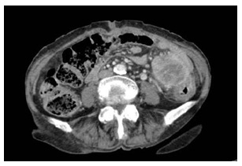
A A paciente apresenta quadro de diverticulite complicada, com coleção, e deve ser submetida à drenagem.
B A paciente apresenta apenas coprostase e deve prosseguir com a investigação da constipação por meio de colonoscopia.
C Por ser portadora de demência senil, a paciente não possui queixa principal confiável.
D A paciente apresenta tumoração em cólon esquerdo e deve ser submetida à ressecção cirúrgica.
E A paciente apresenta tumoração em ovário esquerdo e deve ser encaminhada para a ginecologia.
Questão 67 · Obstrução Intestinal Alta · 4000138790Um paciente de 63 anos de idade deu entrada no pronto-socorro por dor abdominal e distensão há cinco dias, com parada de eliminação de gases e fezes. Tinha história prévia de apendicectomia laparotômica há quinze anos. Realizou uma radiogra a de abdome agudo, que mostrou empilhamento de moeda e níveis hidroaéreos. Foi diagnosticado com abdome agudo obstrutivo e não apresentou resposta ao tratamento clínico, sendo submetido à laparotomia exploradora. No intraoperatório, foram observadas bridas, que foram desfeitas sem necessidade de ressecção de alça. No terceiro dia pós- operatório, sua sonda nasogástrica ainda apontava débito de 900 mL, com abdome distendido. Com base nessa situação hipotética, assinale a alternativa que apresenta a melhor conduta.
A realizar tomografia para avaliar a causa
B fechar a sonda nasogástrica e observar se o paciente apresentará piora clínica
C reabordar o paciente cirurgicamente
D sacar sonda e iniciar dieta hídrica
E aguardar melhora, manter sonda aberta, corrigir possíveis distúrbios hidroeletrolíticos e introduzir nutrição parenteral
Questão 68 · Diagnóstico · Abdome Agudo Obstrutivo · Exames de Imagem · 4000138628Um paciente de 82 anos de idade, obstipado crônico, com quadro de dor abdominal difusa, associada com náuseas e diminuição de eliminação de gases e fezes nos últimos dois dias, nega cirurgias anteriores ou emagrecimento. Ao exame físico, com distensão difusa moderada, sem sinais de peritonite. Com base nesse caso hipotético, assinale a alternativa correta.
A A hérnia interna pode ser descartada, pois não realizou cirurgia prévia.
B O volvo de sigmoide parece ser o diagnóstico mais provável.
C A ultrassonografia abdominal seria o primeiro exame para a avaliação diagnóstica.
D A neoplasia de cólon é pouco provável, pois não há emagrecimento significativo.
E Embora se possa iniciar a avaliação com uma radiografia simples, a tomografia será realizada.
Questão 69 · Hérnias Complicadas · Cirurgia · Hérnia Femoral · 4000133719A técnica mais recomendada para o reparo da hérnia femoral estrangulada com necrose segmentar de intestino delgado é a de:
A McVay.
B Bassini.
C Shouldice.
D Lichtenstein.
Questão 70 · Cirurgia · Síndrome da Artéria Mesentéria Superior · 4000137318Paciente de 48 anos, diabética tipo 2, tabagista, com diagnóstico de neoplasia de mama esquerda, submetida a tratamento cirúrgico (mastectomia radical e linfadenectomia) e quimioterapia adjuvante há 6 meses. Durante o tratamento quimioterápico, apresentou importante perda ponderal, aproximadamente 25 kg, sendo o seu peso atual apenas 43 kg. Comparece ao Pronto-Socorro com queixa de dor abdominal em região epigástrica, sensação de plenitude pós-prandial, saciedade precoce, anorexia, náuseas e vômitos biliares. Esses sintomas eram esporádicos, porém tornaram-se mais intensos nos últimos três dias. Refere alívio da dor ao assumir a posição genupeitoral. Ao exame físico: emagrecida, descorada ++/4, desidratada ++/4, eupneica, afebril. Ausculta pulmonar e cardíaca sem alterações. FC: 102 bpm, PA: 100 x 60 mmHg, FR: 18 irpm. Abdome escavado, ácido, pouco doloroso e distendido no andar superior do abdome, sem massas palpáveis, RHA presentes. Exames laboratoriais: Hb: 9,7 g/dL; Leuco: 10,50 mil/mm³ (sem desvio à esquerda); PCR: 15 mg/dL; K: 3,0 mmol/L, Creatinina: 1,22 mg/dl; Ureia: 34 mg/dl. Gasometria compatível com alcalose metabólica. Após passagem de sonda nasogástrica, hidratação endovenosa e início da correção dos distúrbios hidroeletrolíticos e ácido- básicos, foi realizada tomografia contrastada de abdome (imagem a seguir). Em relação ao caso, qual é o provável diagnóstico e o respectivo tratamento?
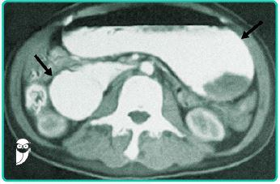
A Volvo gástrico, distorção e gastropexia endoscópica.
B Síndrome de Bouveret, endoscopia digestiva alta e litotripsia.
C Síndrome de Wilkie, duodenojejunostomia.
D Gastroparesia diabética, tratamento clínico com controle glicêmico, mudanças dietéticas e procinéticos.
E Estenose pré-pilórica por doença ulcerosa péptica, antrectomia, vagotomia troncular e reconstrução a Billroth II.
Questão 71 · Tratamento · Cirurgia · 4000127758Paciente de 66 anos, procura emergência referindo dor abdominal em cólica há três dias associado a distensão abdominal e vômitos. Ele relata que há um dia passou a apresentar febre, dispneia e fraqueza. De antecedentes pessoais refere ser diabético controlado com hipoglicemiantes orais e hipertenso em uso de valsartana e anlodipina e também cirurgia para apendicite na adolescência. Ao exame físico ele está desidratado, corado, febril (37,8º C). No exame do abdome, o paciente apresenta uma incisão mediana infra umbilical, distensão abdominal com ruídos hidroaéreos diminuídos e dor difusa a palpação abdominal. Uma tomogra a de abdome é solicitada e mostra um padrão de intestino delgado com alças nas e alças grossas com paredes espessadas captando contraste, pneumatose intestinal e líquido livre na cavidade. Qual o diagnóstico e conduta para este caso:
A Obstrução por bridas. Deve ser tratado com sonda nasogástrica em drenagem, hidratação e correção de distúrbios eletrolíticos e reavaliação em 24 horas.
B Obstrução com sinais clínicos e tomográficos de complicação. Deve ser realizada correção dos distúrbios hidro eletrolíticos e indicar cirurgia de urgência.
C Pseudo obstrução intestinal. Deve ser conduzido com correção dos distúrbios hidro eletrolíticos, colocação de uma sonda retal e nasogástrica e reavaliação em 24 horas.
D Obstrução intestinal por tumor de colo sigmoide. Deve ser submetido a uma colonoscopia descompressiva após a correção dos distúrbios hidro eletrolíticos.
Questão 72 · Abdome Agudo Obstrutivo · Complicações · Íleo Biliar · 4000107729Paciente idosa dá entrada no pronto-socorro com distensão abdominal, icterícia e vômitos incoercíveis. No raio X simples de abdome, observa-se a tríade de Rigler. Qual o provável diagnóstico?
A Síndrome de Mirizzi
B Síndrome de Mallory-Weiss
C Síndrome de Boerhaave
D Doença de Buschke-Lowenstein
E Íleo biliar
Questão 73 · Abdome Agudo Obstrutivo · Complicações · Cirurgia · 4000103420Homem de 61 anos chega à sala de emergência com fortes dores abdominais, em cólicas, difusamente, e distensão abdominal há 2 horas; refere vômitos fétidos e parada de eliminação de gases, sem febre. Nega hérnias e cirurgias prévias. Exame físico: sinais vitais sem alterações; distensão abdominal, ruídos hidroaéreos aumentados, com hipertimpanismo e dor à palpação abdominal. Imagem demonstrada a seguir. Diante desse caso, pode-se considerar qual das hipóteses diagnósticas?
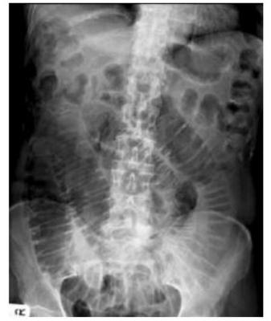
A Aderências peritoneais.
B Doença inflamatória intestinal.
C Íleo biliar.
D Neoplasia de cólon direito.
Questão 74 · Cirurgia · Neoplasia Colorretal · 4000101708Homem, 79 anos de idade, foi admitido no serviço de emergência por obstrução intestinal devido a tumor de sigmoide. Trata-se de doente com hipertensão arterial controlada e coronariopatia com antecedente de colocação de “stent”. Realizada tomogra a de abdome que evidenciou distensão importante do cólon e lesão estenosante do sigmoide, sem invasão de estruturas adjacentes ou metástases. Durante a cirurgia evoluiu com instabilidade hemodinâmica e aumento importante de lactato. Qual é o melhor tratamento operatório nesta condição?
A Retossigmoidectomia com anastomose primária e colostomia de proteção.
B Retossigmoidectomia com anastomose primária e ileostomia de proteção.
C Colectomia subtotal com anastomose primária e ileostomia de proteção.
D Colectomia subtotal com anastomose primária.
E Retossigmoidectomia com colostomia terminal e sepultamento do reto.
Questão 75 · Manif estações Clínicas e Exame Físico · Cirurgia · 4000095646Homem de 72 anos, 70kg, chegou ao pronto-socorro com história de há 12 horas dor abdominal intensa, tipo cólica; há 4 horas parada de eliminação de atos e fezes, com vômitos de líquido amarronzado e com odor fétido, redução do volume urinário e queda importante do estado geral. Refere alteração do hábito intestinal há cerca de um mês passando a car mais obstipado. Nega cirurgias abdominais prévias. Ao exame: pressão arterial = 100 x 70 mmHg, pulso = frequência cardíaca = 110bpm, temperatura = 37,4°C, descorado, e com distensão abdominal importante. Das alterações de exame físico descritas abaixo será mais compatível com o quadro clínico deste paciente o achado de:
A desaparecimento da macicez hepática.
B descompressão positiva em hipocôndrio direito.
C massa compressível em hipocôndrio direito
D ruídos hidroaéreos metálicos
E sinal do obturador positivo.
Questão 76 · Volvo de Ceco · Cirurgia · 4000084065Paciente jovem, sem instabilidade hemodinâmica, deu entrada na emergência com quadro de dor abdominal e distensão. A tomografia computadorizada evidenciou presença de volvo de ceco. O tratamento realizado será:
A enteropexia à direita
B ileostomia descompressiva
C colonoscopia com cecostomia
D colectomia direita e anastomose primária
Questão 77 · Manif estações Clínicas e Exame Físico · Cirurgia · Exames de Imagem · 4000084000Paciente feminina de 40 anos, foi submetida a cirurgia bariátrica há 2 anos com perda ponderal de 50 kg. Há cerca de 2 dias iniciou quadro de dor em mesogástrio cursando com parada de eliminação de gases e fezes. Apresentava taquicardia , temperatura axilar de 38ºC e dor a palpação difusa do abdome ao exame físico. Leucograma com leucocitose e desvio para esquerda. Radiogra a de abdome agudo evidenciando distensão de delgado sem dilatação colônica.Tomogra a de abdome e pelve com contraste venoso demonstrou ingurgitamento dos vasos da raiz do mesentério com adensamento da gordura e dilatação de alça de delgado com níveis hidroaéreos. Qual a conduta mais apropriada no momento?
A Observação por 24 horas
B Cirurgia de urgência
C Repetir a Tomografia Computadorizada
D Ressonância magnética
Questão 78 · Abdome Agudo Obstrutivo · Cirurgia · 4000081309A obstrução intestinal possui várias causas. Das afirmativas abaixo, qual está ERRADA:
A A obstrução mecânica da luz intestinal pode ocorrer por íleo biliar, fecaloma e bezoar.
B Os vômitos são fecaloides quando a obstrução ocorre antes do ângulo de Treitz.
C Pode haver obstrução por lesão da parede intestinal como ocorre nas doenças inflamatórias, diverticulite de cólon e neoplasias.
D Neoplasia de cólon e diverticulite são causas mais frequentes de obstrução nos idosos.
Questão 79 · Doença Inf lamatória Intestinal · Cirurgia · 4000078068Mulher de 35 anos com doença de Crohn de íleo distal em tratamento ambulatorial, deu entrada em unidade de pronto atendimento com vômitos associados à parada de eliminação de gases e fezes há 4 dias. Ao exame físico apresenta distensão abdominal, sem sinais de irritação peritoneal. A radiogra a simples de abdome revelou importante distensão do intestino delgado com ausência de gases e fezes no cólon. Qual a principal hipótese diagnóstica?
A Abdome agudo obstrutivo por estenose da doença de Crohn.
B Abdome agudo obstrutivo por atonia ileal.
C Abdome agudo obstrutivo por bridas secundárias à doença de Crohn.
D Abdome agudo por mega cólon tóxico.
E Nenhuma das alternativas anteriores.
Questão 80 · Pseudoobstrução Colônica Síndrome de Ogilvie · Cirurgia · 4000063051É uma causa de pseudo-obstrução intestinal:
A Bezoar.
B Síndrome de Ogilvie.
C Ascaridíase.
D Síndrome de Bouveret.
Questão 81 · Pseudoobstrução Colônica Síndrome de Ogilvie · Cirurgia · 4000062451Sobre a síndrome de Ogilvie, marque a alternativa incorreta:
A Tem como apresentação clínica uma marcante dilatação do cólon;
B O uso da Neostigmina é contraindicado nesses casos;
C A exclusão da presença de obstrução mecânica é obrigatória;
D A colonoscopia descompressiva pode ser tentada caso falhe o tratamento de suporte, com o risco de perfuração intestinal;
E Condições associadas são: ventilação mecânica, sepse e infarto agudo do miocárdio;
Questão 82 · Cirurgia · Aderências Intestinais Bridas · Exames de Imagem · 4000034344Paciente do sexo masculino, 38 anos, é atendido na UPA queixando-se de dor e distensão abdominal, com parada da eliminação de fezes há quatro dias e de gases há cerca de 24 horas. Relata ainda náuseas e hiporexia. História pregressa de cirurgia bariátrica há dois anos (IMC atual = 27Kg/m²) e apendicectomia há 22 anos. Abdome bem distendido, algo doloroso, mas sem irritação peritoneal. Toque retal mostrou esfíncter normotônico, com ausência de fezes e de sangue na ampola retal. A conduta propedêutica MAIS ADEQUADA para se iniciar a avaliação é solicitar:
A colonoscopia.
B dosagem de amilase e lipase séricas.
C radiografia de abdome.
D ultrassonografia abdominal.
Questão 83 · Abdome Agudo Obstrutivo · Cirurgia · 4000122958Paciente de 78 anos, masculino, proveniente do interior do Ceará, com quadro de obstrução intestinal. Tem parada de eliminação de flatos e fezes há 10 dias, com inúmeras tentativas malsucedidas de clister, e início de vômitos fecalóides há 36 horas, 2 episódios. Apresenta-se algo toxêmico, com PA 100 x 70 mmHg, FC 90, FR 24, temperatura axilar de 36,9° C. Diurese presente mas não mensurada, e GCS 15. Sobre o tipo de obstrução aqui encontrada, o nível anatômico que marca este tipo de obstrução, e o melhor tratamento aqui a ser estabelecido é:
A obstrução alta – válvula íleo-cecal – laparoscopia
B obstrução baixa – válvula íleo-cecal – laparotomia
C obstrução baixa – ângulo de Treitz - colonoscopia
D obstrução alta – piloro – laparotomia
E obstrução baixa – válvula íleo cecal – colonoscopia
Questão 84 · Tratamento · Cirurgia · 4000121970Qual o tratamento a ser empregado em um paciente com volvo de sigmoide sem sinais de necrose colônica que não respondeu à drenagem colônica com o uso do sigmoidoscópio flexível?
A Colonoscopia para desfazer o volvo.
B Sigmoidostomia.
C Transversostomia.
D Terapia de suporte clínico e sigmoidectomia eletiva.
E Operação de Hartmann.
Questão 85 · Diagnóstico · Cirurgia · Exames Complementares · 4000120778Menina de 14 anos apresenta dor e distensão abdominal há 2 dias, com piora progressiva, associada a vômitos esverdeados e parada da eliminação de gases e fezes. RX de abdome (imagem a seguir). Em relação a esse RX de abdome, é CORRETO afirmar que foi realizado:
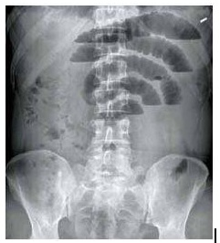
A Em pé e apresenta níveis hidroaéreos sugestivos de obstrução intestinal e imagem de “empilhamento de moedas”, localizando obstrução em nível de intestino delgado.
B Em decúbito dorsal e apresenta níveis hidroaéreos sugestivos de obstrução intestinal e imagem de “empilhamento de moedas”, localizando obstrução em nível de intestino delgado.
C Em pé e apresenta haustrações que não compreendem todo o diâmetro das alças, localizando obstrução em nível de cólon, com imagem sugestiva de grande quantidade de fezes no reto.
D Em pé e apresenta níveis hidroaéreos não escalonados, sugestivos de quadro diarreico, com presença de quantidade moderada de gás na região do reto.
Questão 86 · Abdome Agudo Obstrutivo · Cirurgia · Tratamento Cirúrgico das Doenças Inf lamatórias Intestinais · 4000114918Paciente do sexo feminino, com 37 anos, sabidamente com doença de Chron, evoluiu com quadro de parada de eliminação de fezes e atos, vômitos fecalóides. Feito Rx de abdômen, com suspeição para abdômen agudo obstrutivo. Decidido por cirurgia, com achado de estenose de ílio distal (50 cm da válvula ilio cecal), com extensão de 2 cm. A melhor conduta cirúrgica:
A Enterectomia + colectomia direita, com iliostomia e fístula mucosa.
B Dilatação da estenose mecânica.
C Ressecção do segmento estenosado, com anastomose primária.
D Plastia da estenose tipo Heineke-Mikulicz com biópsia.
E Enterectomia com anastomose ilio retal.
Questão 87 · Abdome Agudo Obstrutivo · Cirurgia · 4000106406Homem de 46 anos vítima de ferimento por projétil de arma de fogo, com lesão exclusiva de coluna torácica, evoluiu com dé ct neurológico motor e sensitivo completo em nível de T11. Tratamento cirúrgico para retirada de fragmentos ósseos do canal medular. Encontra-se no 5° pós-operatório com distensão abdominal, sem evacuar e eliminar gases desde o procedimento. Ao exame físico afebril, normotenso, eupneico, corado e hidratado. Abdome com importante distensão, timpânico, sem irritação peritoneal. Toque retal com gás na ampola e sem fezes. Exames laboratoriais: Hb 9,7g/dL; Leucócitos 11,33 mil/mm³ (sem desvio); PCR 78. RX simples de abdome apresentado. Qual o tratamento neste momento?
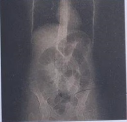
A Colonoscopia
B Laparoscopia
C Lavagem intestinal.
D Colectomia
Questão 88 · Íleo Pósoperatório · Cirurgia · Íleo Paralítico · 4000100475Paciente do sexo masculino, 40 anos, foi submetido a colectomia esquerda seguida de colostomia tipo Hartmann, devido a tumor de cólon obstrutivo. Durante a cirurgia, observou-se edema e dilatação de todo o intestino delgado e do cólon. No 5° dia de pós-operatório, o paciente está em regular estado geral, eupneico, afebril, permanece com distensão abdominal e alto débito de líquido bilioso pela sonda nasogástrica, ruídos abdominais diminuídos e eliminação precária de gases pela colostomia. A radiogra a simples de abdome mostra distensão de intestino delgado e cólon. Das possibilidades abaixo, a mais provável seria:
A Obstrução intestinal por bridas
B Íleo paralítico
C Obstrução intestinal por hérnia interna
D Obstrução da colostomia
Questão 89 · Obstrução Intestinal Alta · Cirurgia · 4000085490Considere as assertivas abaixo sobre a obstrução intestinal. I - O uso de contraste hidrossolúvel (gastrogra na) está indicado para avaliação de necessidade de cirurgia imediata em pacientes com obstrução intestinal. II. - Hérnia interna é a causa mais comum de volvo secundário do intestino delgado. III. - O sinal do redemoinho, visto à tomografia computadorizada, pode estar presente no volvo do intestino delgado. Quais são corretas?
A Apenas I
B Apenas II
C Apenas III
D Apenas II e III
E I, II e III
Questão 90 · Pseudoobstrução Colônica Síndrome de Ogilvie · Cirurgia · 4000032901Homem de 73 anos, com insu ciência cardíaca, submetido a gastrectomia subtotal por neoplasia maligna evolui no quarto dia pós-operatório com distensão abdominal importante, sem dor, mas com dilatação muito importante do ceco e cólon ascendente evidenciada na radiografia de abdome. Na avaliação laboratorial, há hipocalemia e hipomagnesemia. Qual é o diagnóstico MAIS PROVÁVEL?
A Colite por citomegalovírus.
B Íleo paralítico
C Megacólon tóxico.
D Pseudo-obstrução colônica aguda.
Questão 91 · Cirurgia · Volvo Gástrico · 4000088357Paciente 78 anos, chega a emergência com quadro de dor abdominal intensa e constante no abdome superior, regurgitações com pouco vômito e insucesso de sondagem gástrica (tríade de Borchardt). RX e TC do tórax revelaram víscera com gás no tórax. Qual o diagnóstico provável?
A Hérnia de hiato estrangulada.
B Volvo gástrico mesoaxial.
C Volvo gástrico organoaxial.
D Hérnia de bochdalek.
E Hérnia de Morgagni encarcerda.
Questão 92 · Obstrução Intestinal Alta · Cirurgia · 4000067736Paulo Roberto, 22 anos, com síndrome de Peutz-Jeghers, deu entrada no serviço de emergência com quadro de oclusão intestinal. Realizou tomogra a computadorizada, que evidenciou distensão do intestino delgado com imagem em alvo. A principal hipótese diagnóstica para esse quadro obstrutivo é: Respostas: 1 12 23 34 45 56 67 78 89
A Invaginação intestinal.
B Torção mesentérica.
C Estenose luminal.
D Hérnia interna.